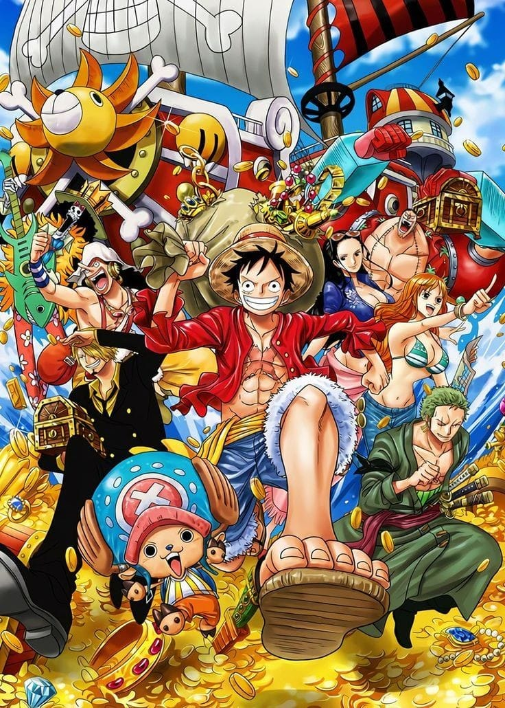
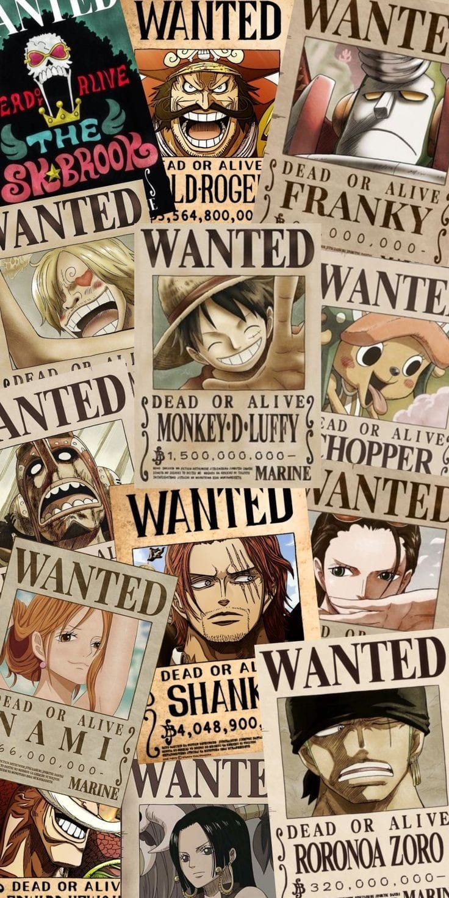
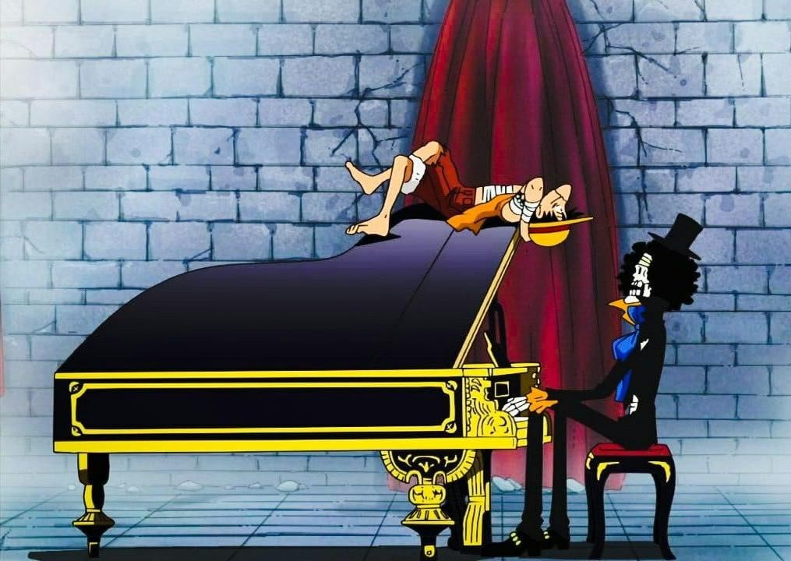
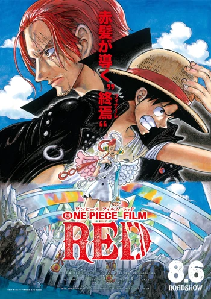

One Piece(Manga)
Es un manga escrito e ilustrado por los mangaka Japonéses Eiichirō Oda. Comenzó a publicarse en la revista Japonesa Weekly Shōnen Jump el 22 de julio de 1997 y a la fecha se han publicado 103 volúmenes. La historia de One Piece narra las aventuras de una tripulación de piratas que se embarcan para encontrar un tesoro denominado el One Piece. Si bien la mayoría de los personajes son navegantes, estos se distinguen de la Marina, que es una organización encargada de controlar y mantener apaciguados a los piratas que causan estragos en islas, pueblos y ciudades neutrales; sin embargo, en la serie se muestra que el Gobierno Mundial, la organización que administra a la Marina, se encuentra bajo la corrupción y la manipulación. Asimismo, la serie incluye a diversos personajes que poseen diferentes habilidades y poderes. Geográficamente, el mundo de One Piece está cubierto por dos vastos océanos que están divididos por una conglomeración masiva de montañas, que reciben el nombre de la Red Line
Akuma No Mi (Fruta del Diablo)

Las Frutas del Diablo (悪魔の実 «Akuma no Mi» son un tipo de frutas que, si se ingieren, conceden habilidades sobrehumanas a quien las consuma, aunque con la consecuencia de no poder nadar, debido a que el agua del mar les debilita. Existen tres tipos:Paramecia: Brinda poderes sobrehumanos a quien haya consumido. Estos poderes tienen que ver con el cuerpo físico, manipular el medio ambiente o producir algún tipo de sustancia y resulta ser la más común de las tres. Zoan: Permite a su usuario transformarse, ya sea parcial o totalmente en un animal específico; si bien estos pueden ser animales comunes, también existen usuarios que pueden mutar en criaturas mitológicas como el fénix o en animales prehistóricos como dinosaurios. Logia : Otorga al usuario habilidades «capaces de transformar su cuerpo en el elemento al que la fruta representa», haciéndolo inmune a ataques físicos, es el tipo de fruta más poderosa entre las tres, pero este tipo de fruta puede ser contrarrestada por usuarios de haki de armadura.
Mugiwaras
- Monkey D. Luffy: Es el protagonista y capitán de la tripulación. Es capaz de estirarse como la goma gracias a los poderes adquiridos tras ingerir una Fruta del Diablo. Sueña con convertirse en el próximo Rey de los Piratas encontrando el One Piece.
- Roronoa Zoro: Combatiente de la tripulación. Es un espadachín experto que lucha usando tres espadas. Sueña con convertirse en el mejor espadachín del mundo. También se caracteriza por tener un mal sentido de la orientación y discutir a menudo con Sanji.
- Nami: Navegante de la tripulación. Es experta en mapas y el clima, y adora el dinero. Sueña con dibujar el mayor mapa del mundo. También se irrita muy fácilmente cuando sus compañeros no se toman las cosas en serio.
- Usopp: Francotirador de la tripulación. Suele mostrarse cobarde y es un mentiroso compulsivo. Sueña con convertirse en un valiente guerrero, y le gustaría visitar Elbaf, hogar de los más bravos guerreros.
- Sanji: Cocinero de la tripulación. También es un gran luchador. Es muy enamoradizo, y trata de forma especial a las chicas de la tripulación. Sueña con encontrar el legendario mar All Blue. Suele discutir a menudo con Zoro.
- Tony Tony Chopper: Médico de la tripulación. Un reno capaz de caminar y hablar como los humanos gracias a los poderes adquiridos tras ingerir una Fruta del Diablo. Sueña con ser un médico capaz de curar cualquier enfermedad.
- Nico Robin: Arqueóloga de la tripulación. La única persona en el mundo capaz de leer los Poneglyph, y sueña con descubrir la historia del Siglo Vacío al leerlos. Puede crear nuevas partes de su cuerpo gracias a los poderes adquiridos tras ingerir una Fruta del Diablo.
- Franky: Carpintero de la tripulación. Es un cyborg con grandes conocimientos en tecnología. Sueña con construir un barco capaz de navegar por todo el océano, construyendo para ello el segundo barco de la tripulación, el Thousand Sunny.
- Brook: Músico de la tripulación. Un esqueleto viviente al que le gusta bromear. Revivió gracias a los poderes de una Fruta del Diablo que ingirió cuando aun estaba con vida. También es un habilidoso espadachín. Sueña con reencontrarse con Laboon, una ballena de la que él y su anterior tripulación fueron amigos.
- Jinbe: Timonel de la tripulación. Un hombre-pez que pertenecía al grupo de los Siete Guerreros del Mar. Sueña con un mundo de igualdad entre los hombres-pez y los humanos.
Canciones de One Piece
Red: Film
Los Piratas de Sombrero de Paja van a un festival de música en la isla de Elegia a ver el concierto de Uta, una diva de enorme fama. Lo que iba a ser un concierto normal es interrumpido por una gran revelación por parte de Luffy: Uta es hija del Emperador Pirata Shanks.One Piece Film: Red es la película más taquillera de la historia de One Piece, superando las ventas de One Piece Film: Z, la anterior película más exitosa, en sólo diez días.